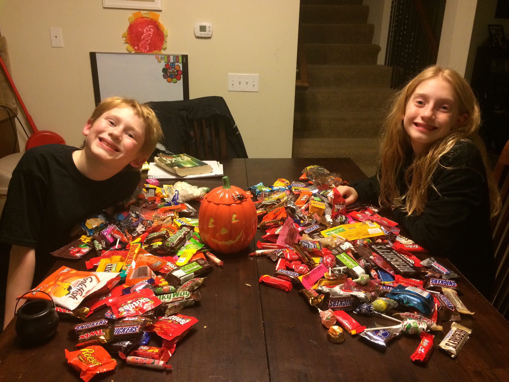
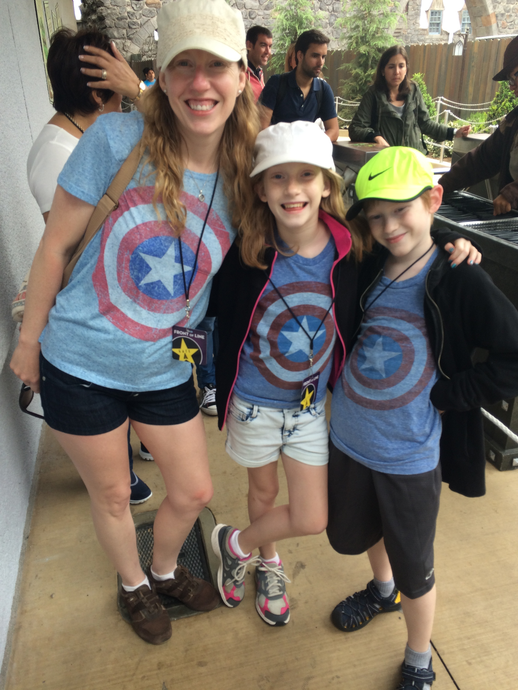

The Details...


I currently live in LaVista Nebraska where I am doing my best to make a nice home for myself and my peeps.
My children - frequently referred to as my clones - are Zoey (13) and Cooper (11).
As a family, we enjoy boardgames, movies, and bike riding.
I was raised in Iowa and have gone to a number of schools but landed in Omaha where I completed my bachelors degree in computer science and now work as a System Engineer for OTTR Chronic Care Solutions.
My Goals
- I want to raise my children to be happy, healthy, productive members of society.
- I have a desire to travel the world and experience many different lifestyles and cultures.
- I'd like to work remotely from what ever location I am currently calling home.
- I also want to someday become more of an accomplished writer.
